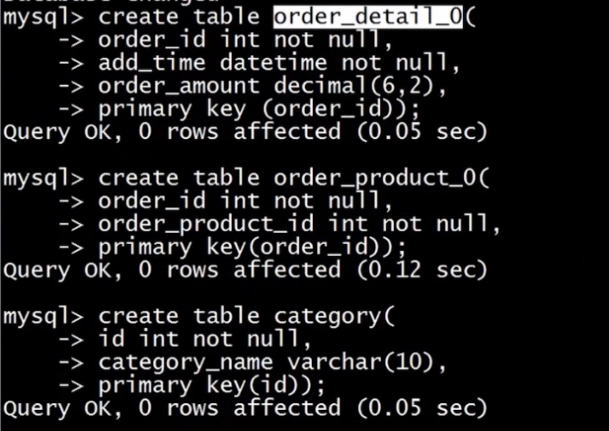

分库分表
集中方式
- 把一个实例中的多个数据库拆分到不同的实例

- 把一个库中的表分离到不同的数据库中
- 根据写压力来拆分，缓解写负载

数据库分片
- 对一个库中的相关表进行水平拆分到不同实例的数据库中
选择分区键
- 分区键要能尽量避兔跨分片查询的发生
- 分区键要能尽量使各个分片中的数据平均
如何存储无需分片的表
- 每个分片中存储一份相同的数据
- 使用额外的节点统一存储
如何在节点上部署分片
- 每个分片使用单一数据库，并且数据库名也相同
- 将多个分片表存储在一个数据库中，并在表名上加入分片号后缀
- 在一个节点中部署多个数据库，每个数据库包含一个分片
如何分配分片中的数据
- 按分区键的 Hash 值取模来分配分片数据
- 按分区键的范围来分配分片数据
- 利用分区键和分片的映射表来分配分片数据//表放在缓存中
如何生成全局唯一ID
- 使用 auto_increment_increment 和 auto_increment_offset 参数跟分片数目相同
- 使用全局节点来生成 ID
- 在Redis等绶存服务器中创建全局ID
演示
- oneProxyp


- 节点一
- 
- 节点二


- 全局ID